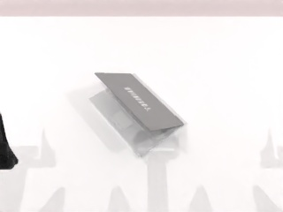
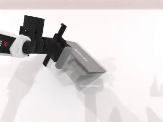

IR Format
How a RoboInF demonstration records what an instruction asked for and what the robot did.
The intermediate representation (IR) ties instructions to objects, regions, poses and contacts in a scene. Training and validation demonstrations include these annotations. The two test conditions provide scenes and instructions only; they do not include expert observations, trajectories or judgments.
A laptop demonstration
In Open Laptop, one training instruction reads: “Open the laptop to 45 degrees by contacting the left region of the lid.” The episode header records the requested region as left. Its fields.scalar annotation records the target angle:
{
"entity": "laptop",
"name": "target_opening_angle_deg",
"value": 45,
"unit": "degree",
"source": "requested"
}


Frames from RoboInF-4K, Jiawei Guo et al. · CC BY 4.0.
The number 45 is a target, not a measurement of the final angle. Likewise, the requested contact point describes where the robot should touch. To find where and when two bodies actually touched, read the episode's contacts.parquet events.
Annotation fields
In annotations.json.gz, actors maps the scene's numeric actor IDs to names, point_ids gives the order of tracked points, and fields holds the groups below. Only the groups relevant to the task are present.
| Group | What to read |
|---|---|
control_condition, scalar | A named condition or scalar value. Read its source and, for a scalar, its unit. |
target_region, contact_point | A region or point associated with an entity. Use the role, coordinate frame and source to interpret it. |
pose | An entity's position and orientation. Read the frame and role; quaternion components in quaternion_wxyz are ordered w, x, y, z. |
bbox, target_bbox | Image boxes for an entity and camera, in normalized x, y, width, height coordinates. A projected box can include occluded parts; visible pixel labels are in the segmentation mask. |
arm | Arm assignment and frame-indexed robot measurements, including end poses and joint actions. Requested and recorded arms can be separate fields. |
Find the records
Start with manifests/train.jsonl or manifests/val.jsonl. Each row names a core tar shard and an episode_id. The same task, shard filename and episode directory identify the companion files.
| Shard | Episode contents |
|---|---|
data/ | episode.json holds the instruction and requested controls. annotations.json.gz holds the IR fields. trajectory.hdf5 contains robot state/action, the physical clock, OpenCV calibration and keypoint traces. |
contacts/ | contacts.parquet: observed body pairs, contact positions, timestamps and frame associations. Events may occur between camera samples. |
masks/ | segmentation.npz: four camera views of integer instance or link IDs. Resolve them with this episode's actors map. |
jpeg/, terminal_rgb/ | Per-camera JPEG streams with byte offsets, plus one separate PNG for the last observation in each view. |
For a 3D trace, use keypoints/positions in the HDF5 file together with point_ids and keypoints/valid_mask. For time, use recorded steps and timestamps with their validity flags. A demonstration with N camera samples has N − 1 transitions; the final observation has no outgoing action.
Read the example
From a local dataset root, this Python snippet reads the target shown above. It needs only the open_laptop core training shard.
import gzip
import json
import tarfile
with tarfile.open("data/open_laptop/train-000.tar") as shard:
path = "episode_0000000/annotations.json.gz"
with gzip.open(shard.extractfile(path), "rt") as stream:
fields = json.load(stream)["fields"]
angle = next(row for row in fields["scalar"]
if row["name"] == "target_opening_angle_deg")
print(angle["value"], angle["unit"], angle["source"])
Output: 45 degree requested.